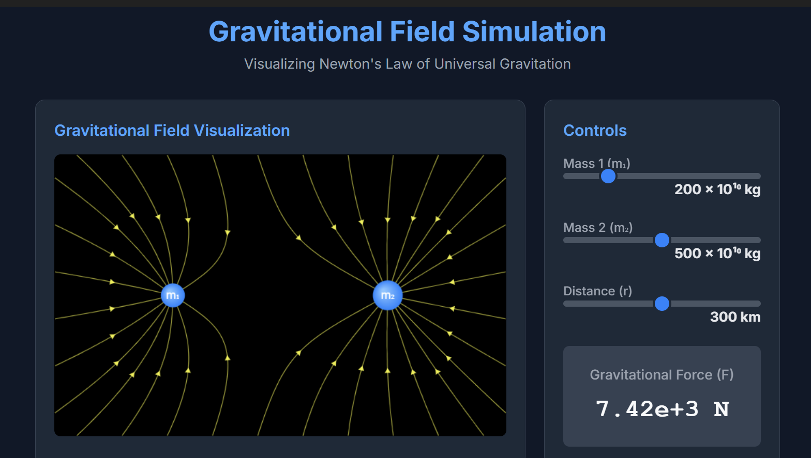
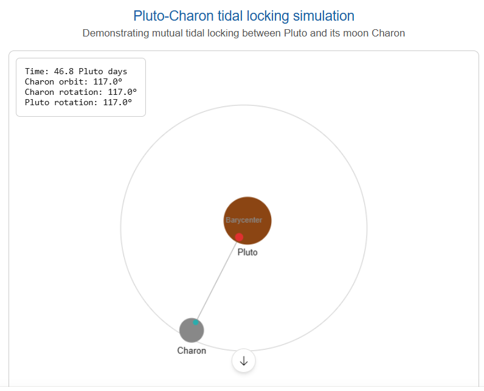
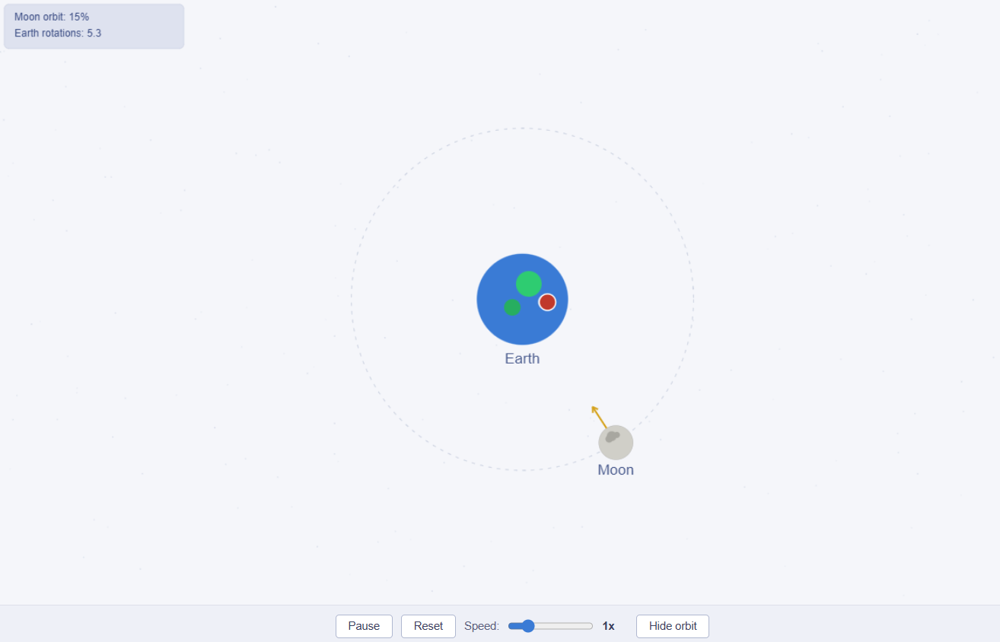
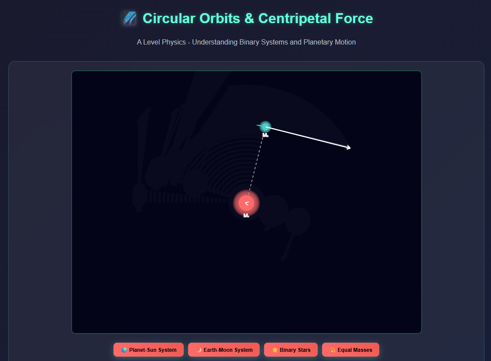

Allows the variation of the two masses showing how it affects the field lines.

The animation shows the Pluto-Charon system, where both objects are mutually tidally locked - they always show the same face to each other. This occurs because Charon is relatively huge compared to Pluto (mass ratio only ~8:1), making them more like a "double planet" where both gravitational influences are significant. If you stood on Pluto, Charon would appear fixed in the sky forever, never rising or setting.

In contrast to the Pluto-Charon system, the Earth-Moon system demonstrates a different type of tidal locking. Only the Moon is tidally locked to Earth - the Moon's rotation period equals its orbital period (about 27.3 days), so we always see the same lunar face. However, Earth continues rotating every 24 hours, giving us day-night cycles. This happens because Earth is much more massive than the Moon (mass ratio ~81:1), so Earth's gravity dominates. The closer mass ratio between Pluto and Charon compared to Earth and Moon explains why both objects became locked in the first system, rather than just one object as shown in this simulation.

This animation demonstrates the fundamental principle that both objects in a gravitational system orbit around their common center of mass (barycenter - term is not required in A level syllabus), not just the smaller object orbiting the larger one. In A Level Physics, we often simplify planetary motion by assuming the planet orbits a stationary Sun, but in reality, both bodies exert equal and opposite gravitational forces on each other (Newton's third law) and both require centripetal force to maintain circular motion. The barycenter's position depends on the mass ratio - when one mass is much larger (like the Sun-Earth system), the barycenter lies very close to or inside the larger body, making it appear stationary. However, in binary star systems or when masses are more equal, you can clearly see both objects orbiting around a point in space between them. This simulation helps visualize how F = GM?M?/r? provides the centripetal force for both masses, and why both objects must have the same angular velocity ? to maintain their fixed separation distance. Try the different scenarios to see how changing the mass ratio dramatically affects where the barycenter is located and how dramatically each object moves in its orbit.